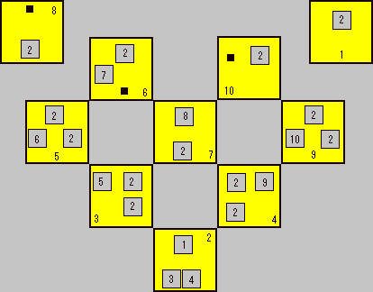

| カヤパの森Lv4のスイッチ 6個あるスイッチを全て緑にする方法です。 ちなみに緑にすれば、左側の扉が開きます。
|
|||||||||
| アプリエス神殿Lv16のワープゾーン  1番地点がスタート。 8番地点に、食べ物ルーレット。 |
|||||||||
| 小技 ケノーピ火山のこのような地形は、黄色い線のように壁と岩の間を すり抜けられます。知っておいて損はありませんよ。 |
|||||||||
| イベントを飛ばすと・・・ 飛行機墜落のイベントを見ずに、ゲームをクリアすることができます。 通常の会話と若干変わるので、おもしろいかもしれません。 |
|||||||||
| セルペンティナLv.28へ この位置で、柵をすり抜けることで、Lv.28ダンジョンへ移動できます。 回復アイテムはたっぷりと持っていきましょう。 |
|||||||||
| ただの落書きか? プック村の教会にある落書きです。 しかし、これはもしかして新・・・いや、Falcomの美術スタッフのサイン ではないでしょうか。 |